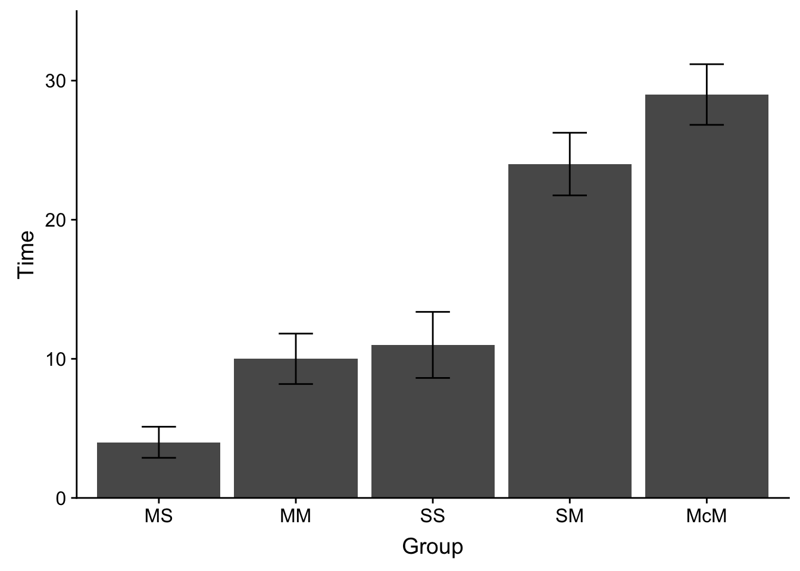
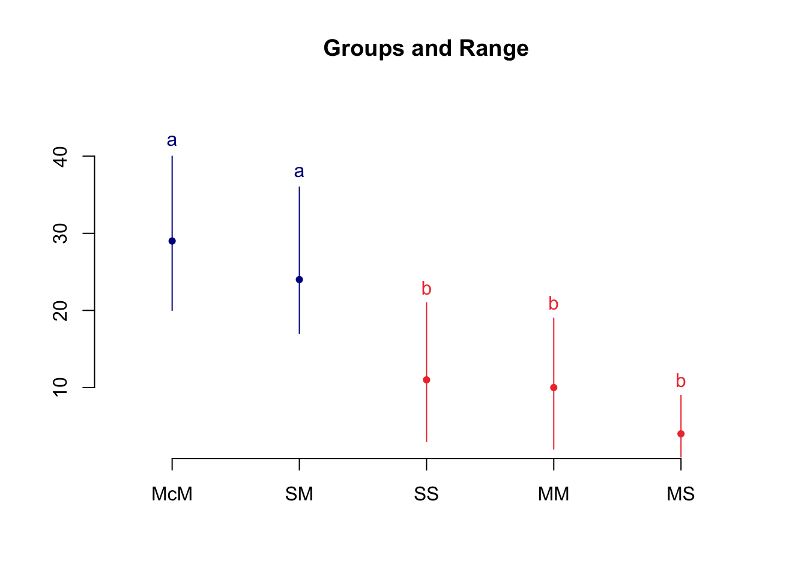

Week 9 Analysis of Variance II: Multiple comparisons in One-way ANOVA
In last weeks vignette we covered One-Way ANOVA. ANOVA is useful when we are comparing 3 or more group means such that the null hypothesis is:
\[\mu_1=\mu_2=\mu_3...=\mu_n\].
In this case, if a single mean is revealed to be significantly different from the others, then the null is rejected. However, rejecting the null only tells us that at least one mean was different from the others; it does not tell us which one or how many. For example with just three means, it could be the case that:
- \(\mu_1≠\mu_2=\mu_3\)
- \(\mu_1=\mu_2≠\mu_3\)
- \(\mu_1=\mu_3≠\mu_2\)
- \(\mu_1≠\mu_2≠\mu_3\)
Simply getting a significant F-value does not tell us this at all. In order to suss out any differences in our groups we are going to need to make direct comparisons between them.
Enter multiple contrasts. Multiple contrasts are a way of testing the potential inequalities between group means like those above. As always, both Howell (Chapter 12) and Field (Chapter 10, specifically 10.4+) do wonderful jobs of laying out the mathematics and logic of multiple comparisons. As with last week I focus on practical implementation and spend some time focusing a bit on potential landmines and theoretical concerns as I see them.
9.1 Getting started (loading packages and data)
This vignette assumes that you have the following packages installed and loaded in R:
# check to make your computer has pacman installed, if not install
if (!require(pacman)) {
install.packages("pacman")
}
# use pacman to check, install, and load necessary packages
pacman::p_load(agricolae, cowplot, tidyverse, multcomp, psych)To start, lets download Siegel’s (1975) data set on Morphine Tolerance. This data set can be found on Howell’s website. Please check the Howell text for background info:
# grab data from online location:
dataset <- read_table2("https://www.uvm.edu/~dhowell/methods8/DataFiles/Tab12-1.dat")## Parsed with column specification:
## cols(
## ID = col_character(),
## Group = col_integer(),
## Time = col_integer()
## )# convert dataset$Group dummycodes to named factor levels:
dataset$Group <- recode_factor(dataset$Group, `1` = "MS", `2` = "MM", `3` = "SS",
`4` = "SM", `5` = "McM")
# get descriptive stats for this data by Group
psych::describeBy(dataset$Time, dataset$Group)##
## Descriptive statistics by group
## group: MS
## vars n mean sd median trimmed mad min max range skew kurtosis se
## X1 1 8 4 3.16 3.5 4 3.71 1 9 8 0.43 -1.59 1.12
## --------------------------------------------------------
## group: MM
## vars n mean sd median trimmed mad min max range skew kurtosis se
## X1 1 8 10 5.13 10.5 10 4.45 2 19 17 0.15 -0.99 1.81
## --------------------------------------------------------
## group: SS
## vars n mean sd median trimmed mad min max range skew kurtosis se
## X1 1 8 11 6.72 10.5 11 8.15 3 21 18 0.23 -1.69 2.38
## --------------------------------------------------------
## group: SM
## vars n mean sd median trimmed mad min max range skew kurtosis se
## X1 1 8 24 6.37 23 24 5.93 17 36 19 0.59 -1.07 2.25
## --------------------------------------------------------
## group: McM
## vars n mean sd median trimmed mad min max range skew kurtosis se
## X1 1 8 29 6.16 28.5 29 5.93 20 40 20 0.28 -1.07 2.18And a quick peek at this data:
ggplot(data = dataset, aes(x = Group, y = Time)) + stat_summary(fun.y = mean, geom = "bar") +
stat_summary(fun.data = mean_se, geom = "errorbar", aes(width = 0.25)) + scale_y_continuous(expand = c(0,
0)) + expand_limits(y = c(0, 35)) + theme_cowplot()
9.2 Running the One-way ANOVA
Now that our data is properly coded we can run our omnibus ANOVA. My own personal preference is to run the ANOVA using lm(). This makes like a lot easier when dealing with contrasts, especially if you decide to employ the method that Field suggests in his guide. I’ll mention more on this alternative below. That said. recall from last week that using the aov() function gives you the same result. Depending on which you choose, you can use the summary(lm.model) or anova(lm.model) to switch back and forth to get the info that you desire:
# running the ANOVA using lm:
lm.model <- lm(formula = Time ~ Group, data = dataset)
# using the summary.aov() function to display as ANOVA table
anova(lm.model)## Analysis of Variance Table
##
## Response: Time
## Df Sum Sq Mean Sq F value Pr(>F)
## Group 4 3497.6 874.4 27.325 2.443e-10 ***
## Residuals 35 1120.0 32.0
## ---
## Signif. codes: 0 '***' 0.001 '**' 0.01 '*' 0.05 '.' 0.1 ' ' 1# summary(lm.model) # alternative outputSo we see here that we have: \(F(4,35)=27.33,p<.001,\eta_p^2=.75\)
Remember again that the only thing that the omnibus ANOVA tells us is that there is an inequality in our means. In this respect, the omnibus begs more questions than it answers—which means are different from which. In order to get this answer we need to run direct comparisons between our means. There are two ways of going about this, we can either (1) plan beforehand what differences in means are especially relevant for us and focus on those, or (2) take a look at all potential differences without any specified predictions. In Case 1, we are performing planned contrasts; in Case 2, we use post hoc tests. More often than not, you will see researchers analyzing differences in means using post hoc tests—that is they run the ANOVA, find that it is significant, and run a battery of pairwise comparisons. It is sometimes the case that of that battery of comparisons, only a select few are actually theoretically relevant. However, if there is a theory-driven case to be made that you are predicting differences between a few select means in your data, then there is an argument to be made that you should run your planned contrasts independent of your ANOVA. That is, you are technically only permitted to run post-hoc tests if your ANOVA is significant (you can only go looking for differences in means if your ANOVA tells you that they exist), whereas planned contrasts can be run regardless of the outcome of the omnibus ANOVA (indeed, some argue that they obviate the need to run the omnibus ANOVA altogether).
My guess is that most of you have experience with post-hoc tests. They are more commonly performed tend to be touched upon in introductory stats courses. So we will spend a little time on these first before proceeding to a more in depth treatment of planned contrasts.
9.3 Post-hoc tests
We use a post-hoc test when we want to test for differences in means that we have not explicitly predicted prior to conducting our experiment. As a result, whenever we perform a post-hoc test, we need to adjust our critical p-values to correct for inflation of Type 1 error. Recall from earlier discussions that the odds of committing a Type 1 error (falsely rejecting the null) is \(1-(1-\alpha)^c\) where \(\alpha\) is you critical p-value and \(c\) is the number of comparisons that are to be performed. Typically we keep this at .05, so when conducting a single test, the likelihood of committing a Type 1 error is: \(1-(1-.05)^1=1-0.95^1=0.05\)
However as we increase the number of comparisons, assuming an \(\alpha\) of 0.05:
- 2 comparisons = \(1-.95^2=0.0975\)
- 3 comparisons = \(1-.95^3=0.1426\)
- 4 comparisons = \(1-.95^4=0.1855\)
- 5 comparisons = \(1-.95^5=0.2262\)
Obviously, we need to control for this. The post-hoc methods that were introduced this week are all similar in that they involve comparing two means (a la t-test) but differ in how the error is controlled. For example a Bonferroni-Dunn correction (which is often used as a post-hoc correction, although initially intended for correcting planned comparisons) adjusts for this by partitioning the significance (by diving your original alpha by the number of comparisons). A popular variant of this method, the Holm test, is a multistage test. It proceeds by ordering the obtained t-values from smallest to largest. We then evaluate the largest t according to the Bonferroni-Dunn correction \(\alpha/c\). Each subsequent comparison t value, \(n\) is evaluated against the correction \(\alpha/(c-n)\). Please note I mention the these two methods with post-hoc analyses, although in true they are intended for planned comparisons. However, in instances in which the number of comparisons is relatively small, I’ve often seen them employed as post-hocs.
So how many comparisons is relatively small? I’d suggest best form is to use the above methods when you have 5 or fewer comparisons, meaning that your critical \(\alpha\) is .01. That said, with a post hoc test, you really do not have a choice in the number of comparisons you can make, you need to test for all possible comparisons on the IV. Why? well if not you are simply cherry picking your data. For example it would be poor form to run our ANOVA and plot your data like so:
p <- ggplot(data = dataset, aes(x = Group, y = Time)) + stat_summary(fun.y = mean,
geom = "bar") + stat_summary(fun.data = mean_se, geom = "errorbar", aes(width = 0.25)) +
scale_y_continuous(expand = c(0, 0)) + expand_limits(y = c(0, 35)) + theme_cowplot()
show(p)
and then decide that you only want to compare ‘McM’ to ‘MS’ because that’s where you see the greatest differences. Or that you simply want to take a look at “MM” and “SS” without considering the rest. Since you did not plan for or explicitly predict these differences from the outset, you are simply banking on what I like to say might be a “historical accident”, that you simply stumbled into these results. As such, it’s deemed as proper for to test all contingencies.
In the case above there are \((5!)/(2!)(5-2)!\) = 10 combinations. If we were to run a Bonferroni correction in this case or critical p would need to be \(.05/10=.005\) which is an extremely conservative value, and thus dramatically inflates the likelihood of Type II error. In cases like this Tukey’s HSD is the traditionally preferred method, as it takes into account the characteristics of your data (in particular the standard error of the distribution) when calculating the critical p value. As such in cases where many post-hoc, pairwise comparisons are made, Tukey’s HSD is less conservative than a Bonferroni adjustment.
One final method that is becoming more en vogue is the Ryan, Einot, Gabriel, Welsch method (REGWQ). Whereas Tukey’s method holds the critical p constant for all comparisons (at the loss of power) the REGWQ allows for an adjustment for the number of comparisons. It is currently being promoted as the most desirable post-hoc method.
9.3.1 Bonferonni-Dunn and Holm tests
In R there are several ways in which we can call post hoc corrections. For example we can call the Bonferonni and Holm adjustments using pairwise.t.test() function from the base package (already installed). The pairwise.t.test() method asks you to input:
x= your DVg= your grouping factorp.adjust.method= the name of your desired correction in string format
First let’s run the pairwise.t.tests with no adjustment (akin to uncorrected p values):
pairwise.t.test(x = dataset$Time, g = dataset$Group, p.adjust.method = "none")##
## Pairwise comparisons using t tests with pooled SD
##
## data: dataset$Time and dataset$Group
##
## MS MM SS SM
## MM 0.041 - - -
## SS 0.018 0.726 - -
## SM 3.1e-08 1.9e-05 5.4e-05 -
## McM 1.9e-10 8.9e-08 2.6e-07 0.086
##
## P value adjustment method: noneYou see above that we get a cross-matrix containing the p values for each cross pair (row × column). Remember this is something we would never do in a post hoc (no corrections) but I wanted to first run this to illustrate a point. Now let’s run the the Bonferroni and Holm corrections:
9.3.1.1 Bonferroni example (pairwise.t.test())
pairwise.t.test(x = dataset$Time, g = dataset$Group, p.adjust.method = "bonferroni")##
## Pairwise comparisons using t tests with pooled SD
##
## data: dataset$Time and dataset$Group
##
## MS MM SS SM
## MM 0.41051 - - -
## SS 0.18319 1.00000 - -
## SM 3.1e-07 0.00019 0.00054 -
## McM 1.9e-09 8.9e-07 2.6e-06 0.85818
##
## P value adjustment method: bonferroni9.3.1.2 Holm example (pairwise.t.test())
pairwise.t.test(x = dataset$Time, g = dataset$Group, p.adjust.method = "holm")##
## Pairwise comparisons using t tests with pooled SD
##
## data: dataset$Time and dataset$Group
##
## MS MM SS SM
## MM 0.12315 - - -
## SS 0.07327 0.72579 - -
## SM 2.8e-07 0.00011 0.00027 -
## McM 1.9e-09 7.1e-07 1.8e-06 0.17164
##
## P value adjustment method: holmAs you can see in the remaining tables, R actually adjusts the p values for you. This is different from (but analogous to) the critical t-value method described in Howell’s text. What this means is that you may interpret the output against your original (familywise) \(\alpha\). So here, any values that are still less than .05 after the corrections are significant.
9.3.2 Tukey HSD and REGWQ tests
In order to run Tukey’s HSD and REGWQ methods we call upon the agricolae package. In this case, we need to input our lm() model into the function, as well as identify our “treatment” (in this case our “Group” factor). For example:
9.3.2.1 Tukey HSD example (agricolae)
lm.model <- lm(formula = Time ~ Group, data = dataset) # from above
agricolae::HSD.test(lm.model, trt = "Group", group = T, console = T)##
## Study: lm.model ~ "Group"
##
## HSD Test for Time
##
## Mean Square Error: 32
##
## Group, means
##
## Time std r Min Max
## McM 29 6.164414 8 20 40
## MM 10 5.126960 8 2 19
## MS 4 3.162278 8 1 9
## SM 24 6.369571 8 17 36
## SS 11 6.718843 8 3 21
##
## Alpha: 0.05 ; DF Error: 35
## Critical Value of Studentized Range: 4.065949
##
## Minimun Significant Difference: 8.131899
##
## Treatments with the same letter are not significantly different.
##
## Time groups
## McM 29 a
## SM 24 a
## SS 11 b
## MM 10 b
## MS 4 bNote that the group and console arguments pertain to the output. You typically will want to keep console set to TRUE as that simply prints the output of your test. The group argument controls how the output is presented. Above we set it to TRUE. This results in an output that groups the treatment means into subsets where treatments with the same letter are not significantly different from one another (i.e., as are not significantly different from each other, bs are not significantly different from each other, but as are different from bs). Conversely if you wanted to see each comparison you can set this to FALSE:
agricolae::HSD.test(lm.model, trt = "Group", group = FALSE, console = TRUE)##
## Study: lm.model ~ "Group"
##
## HSD Test for Time
##
## Mean Square Error: 32
##
## Group, means
##
## Time std r Min Max
## McM 29 6.164414 8 20 40
## MM 10 5.126960 8 2 19
## MS 4 3.162278 8 1 9
## SM 24 6.369571 8 17 36
## SS 11 6.718843 8 3 21
##
## Alpha: 0.05 ; DF Error: 35
## Critical Value of Studentized Range: 4.065949
##
## Comparison between treatments means
##
## difference pvalue signif. LCL UCL
## McM - MM 19 0.0000 *** 10.868101 27.131899
## McM - MS 25 0.0000 *** 16.868101 33.131899
## McM - SM 5 0.4078 -3.131899 13.131899
## McM - SS 18 0.0000 *** 9.868101 26.131899
## MM - MS 6 0.2340 -2.131899 14.131899
## MM - SM -14 0.0002 *** -22.131899 -5.868101
## MM - SS -1 0.9965 -9.131899 7.131899
## MS - SM -20 0.0000 *** -28.131899 -11.868101
## MS - SS -7 0.1198 -15.131899 1.131899
## SM - SS 13 0.0005 *** 4.868101 21.131899Finally, if you do decide to group (group=TRUE), you can take the outcome of this function and use it to generate a nice group plot. This is useful for quick visual inspection.
agricolae::HSD.test(lm.model, trt = "Group", group = T, console = T) %>% plot()##
## Study: lm.model ~ "Group"
##
## HSD Test for Time
##
## Mean Square Error: 32
##
## Group, means
##
## Time std r Min Max
## McM 29 6.164414 8 20 40
## MM 10 5.126960 8 2 19
## MS 4 3.162278 8 1 9
## SM 24 6.369571 8 17 36
## SS 11 6.718843 8 3 21
##
## Alpha: 0.05 ; DF Error: 35
## Critical Value of Studentized Range: 4.065949
##
## Minimun Significant Difference: 8.131899
##
## Treatments with the same letter are not significantly different.
##
## Time groups
## McM 29 a
## SM 24 a
## SS 11 b
## MM 10 b
## MS 4 b
9.3.2.2 REGWQ example (agricolae)
The same applies to REGW, using the REGW.test() function (with group=F, I’m showing all of the comparisons):
agricolae::REGW.test(lm.model, trt = "Group", group = F, console = T)##
## Study: lm.model ~ "Group"
##
## Ryan, Einot and Gabriel and Welsch multiple range test
## for Time
##
## Mean Square Error: 32
##
## Group, means
##
## Time std r Min Max
## McM 29 6.164414 8 20 40
## MM 10 5.126960 8 2 19
## MS 4 3.162278 8 1 9
## SM 24 6.369571 8 17 36
## SS 11 6.718843 8 3 21
##
## Comparison between treatments means
##
## difference pvalue signif. LCL UCL
## McM - MM 19 0.0000 *** 12.1234674 25.876533
## McM - MS 25 0.0000 *** 17.4611210 32.538879
## McM - SM 5 0.3056 -2.6279930 12.627993
## McM - SS 18 0.0000 *** 9.8681013 26.131899
## MM - MS 6 0.0995 . -0.8765326 12.876533
## MM - SM -14 0.0001 *** -21.5388790 -6.461121
## MM - SS -1 0.9846 -8.6279930 6.627993
## MS - SM -20 0.0000 *** -26.8765326 -13.123467
## MS - SS -7 0.0771 . -14.5388790 0.538879
## SM - SS 13 0.0001 *** 6.1234674 19.8765339.4 The logic of Planned contrasts
If you have reasons to predict differences between particular sets of group means that are theory-driven, then you may perform a priori or planned contrasts. Logically, planned contrasts are similar to post-hoc tests in that we are comparing against two means, but there are some differences that make planned contrasts more powerful.
Since your predictions are made prior to collecting data you, technically do not need to get a significant result on the omnibus ANOVA to run your contrasts. Remember, when doing post-hoc tests, if the omnibus ANOVA fails to reject the null, you are not permitted to run follow-up post hoc tests.
Since you are making predictions prior to seeing the outcome of your observed data, then you are safe to make a limited number of comparisons without the charge of cherry-picking. For example, if you have predicted-ahead that there would be differences between groups “MS” and “McM”, or groups “MM” and “MS” then you are free to run those comparisons and those comparisons-only. This is especially useful, since by limiting the number of comparisons, you can effectively reduce the problem of Type I error inflation while limiting the possibiliy of Type II error, keeping the required corrections relatively minimal. For example, recall that using a Bonferonni correction on this data in the post-hoc case mandates that I use an adjusted \(\alpha\) of .005 (.05/10 comparisons), even if I was only really interested in these two comparisons. Here, I am allowed to only perform these two, so my adjusted p is .025.
Depending on the number of comparisons, you may be justified in not performing any p correction at all. For example some recommend no need for correction if the number of contrasts is low or when the comparisons are complementary (e.g. orthogonal). See here, here, and here for discussion of this issue.
We can easily perform a variety of comparisons using planned contrasts. For example, say we are interested in whether MS is different from the mean of the remaining groups (McM+MM+SM+SS), or that MM+MS is different from McM+SM+SS. We can test this using planned contrasts.
9.5 Performing planned contrasts in R
As outlined in both Howell and Field, planned contrasts begin by creating contrast weights. The idea with contrast weights is that the groups that are being compared should sum to equal -1 and +1 respectively, resulting in a null test against 0 (i.e. the two weighted means are equal). Any groups that are not being included in the comparison should be assigned coefficients of 0. For example assume we are comparing “MS” to “MM” and were not concerned with the remaining groups. Then our contrast weights would be:
- MS = +1
- MM = -1
- McM = SM = SS = 0
How about we want to compare McM + MM against the remaining three groups?
- MS + MM = 1
- McM + SM + SS = -1
From there we distribute the weight equally between the number of groups on each side of the contrast, so
- MS = +1/2; MM = +1/2
- McM = -1/3; SM = -1/3; SS = -1/3
in R we can construct each of these contrasts like so:
# checking the order of groups:
levels(dataset$Group)## [1] "MS" "MM" "SS" "SM" "McM"# building contrasts
# MS v. MM
contrast1 <- c(1, -1, 0, 0, 0)
# MS + MM v. SS + SM + McM
contrast2 <- c(1/2, 1/2, -1/3, -1/3, -1/3)When performing planned contrasts in R I recommend using the multicomp package rather than the base package examples in the Field text. For those that are interested as to why, in my experience the base method has a hard time dealing with non-orthogonal contrasts. To perform the contrast requires 3 steps:
- run your omnibus ANOVA
lm()model and save it as an object - input your
lm()model into theglht()function, specifying the name of your IV and planned contrasts; save this object - run a summary() of your object from step 2, including any desired adjustments.
For example, say I wanted to run contrast1 from my data, Comparing “MS” to “MM”.
lm.model <- lm(formula = Time ~ Group, data = dataset)
contrast.model <- multcomp::glht(lm.model, linfct = mcp(Group = contrast1))
# where Group is the name of my IV, and contrast1 are my planned contrasts from
# above
summary(contrast.model, test = adjusted("bonferroni"))##
## Simultaneous Tests for General Linear Hypotheses
##
## Multiple Comparisons of Means: User-defined Contrasts
##
##
## Fit: lm(formula = Time ~ Group, data = dataset)
##
## Linear Hypotheses:
## Estimate Std. Error t value Pr(>|t|)
## 1 == 0 -6.000 2.828 -2.121 0.0411 *
## ---
## Signif. codes: 0 '***' 0.001 '**' 0.01 '*' 0.05 '.' 0.1 ' ' 1
## (Adjusted p values reported -- bonferroni method)The above result tells me:
Estimate: the difference in means between my contrasted groupsStd. Error: a measure of variabilityt-value: obtained from the t-test between groupsPr(>|t|): the resulting p-value- You’ll also note in the output the specified correction method is mentioned (in this case Bonferroni)
Based upon these results I conclude that “MS” and “MM” are significantly different from one another.
Suppose I wanted to run both simultaneously? My preferred method is to create a contrast matrix by rbind() my contrasts. You can then place that matrix object into glht():
# create contrast matrix
contrast.matrix <- rbind(contrast1, contrast2)
# run contrasts
lm.model <- lm(formula = Time ~ Group, data = dataset)
contrast.model <- multcomp::glht(lm.model, linfct = mcp(Group = contrast.matrix))
# where Group is my IV, and contrast.matrix are my planned contrasts
summary(contrast.model, test = adjusted("bonferroni"))##
## Simultaneous Tests for General Linear Hypotheses
##
## Multiple Comparisons of Means: User-defined Contrasts
##
##
## Fit: lm(formula = Time ~ Group, data = dataset)
##
## Linear Hypotheses:
## Estimate Std. Error t value Pr(>|t|)
## contrast1 == 0 -6.000 2.828 -2.121 0.0821 .
## contrast2 == 0 -14.333 1.826 -7.851 6.32e-09 ***
## ---
## Signif. codes: 0 '***' 0.001 '**' 0.01 '*' 0.05 '.' 0.1 ' ' 1
## (Adjusted p values reported -- bonferroni method)You’ll note that the reported p.value for contrast1 has changed from the previous example, due to the Bonferroni correction (in this case we have 2 tests). To get a list and description of accepted adjustment methods type ? adjusted in your console.
9.5.1 Making the output easier to read
One thing you may have noticed above is that your contrasts aren’t labelled very transparently. Looking at the output you would have to remember what was being contrasted in contrast1 and contrast2. You can save yourself a little headache if you label your contrasts while constructing the matrix. For example, here I’m performing the linear contrasts from the Howell text:
contrast1 <- c(0, -1, 0, 0, 1)
contrast2 <- c(-1, 0, 1, 0, 0)
contrast3 <- c(0, 1, -1, 0, 0)
contrast4 <- c(-1/3, -1/3, -1/3, 1/2, 1/2)From here you can modify the previous code to assign names to the rows in your contrast matrix:
contrast.matrix <- rbind(`MM v. McM` = contrast1, `MS v. SS` = contrast2, `MM v. SS` = contrast3,
`MS+MM+SS v. SM+McM` = contrast4)And now running these contrasts (this time using a Holm adjustment):
lm.model <- lm(formula = Time ~ Group, data = dataset)
contrast.model <- multcomp::glht(lm.model, linfct = mcp(Group = contrast.matrix))
# where Group is my IV, and contrast1 are my planned contrasts from above
summary(contrast.model, test = adjusted("holm"))##
## Simultaneous Tests for General Linear Hypotheses
##
## Multiple Comparisons of Means: User-defined Contrasts
##
##
## Fit: lm(formula = Time ~ Group, data = dataset)
##
## Linear Hypotheses:
## Estimate Std. Error t value Pr(>|t|)
## MM v. McM == 0 19.000 2.828 6.718 2.66e-07 ***
## MS v. SS == 0 7.000 2.828 2.475 0.0366 *
## MM v. SS == 0 -1.000 2.828 -0.354 0.7258
## MS+MM+SS v. SM+McM == 0 18.167 1.826 9.950 3.86e-11 ***
## ---
## Signif. codes: 0 '***' 0.001 '**' 0.01 '*' 0.05 '.' 0.1 ' ' 1
## (Adjusted p values reported -- holm method)For practice, try re-running this last analysis but using the Bonferroni adjustment instead of Holm. Note how that changes the p-values for some of your contrasts.
9.5.2 Calculating your effect size
Typically when reporting the effect size off the difference between two means we use Cohen’s D. However, calculating Cohen’s D in a planned contrast is slighly more involved than the method used for a regular t-test. This is because with a regular t-test you only have 2 means from 2 samples that you have collected. In the case of Planned Contrasts in ANOVA, while you are only comparing two means, those means are nested within a larger group (e.g., comparing MS and MM, we still need to account for the fact that we also collected samples from SS, SM, and McM) or may be derived from multiple samples (e.g., contrasting the mean of MS + MM against the mean of SS + SM + McM). Simply put, in our calculations we need to account for the influence of all of our collected groups. This is done by placing the contrasted difference in the context of the Root Mean Square Error, or the square root of the Mean Square Error of the residuals in our ANOVA model. To do this we need two things:
- a vector containing our contrasts— e.g.,
c(-1/2,-1/2,1/3,1/3,1/3) - the mean of each group
- the Mean Square Error of the residuals from
anova()
So to calculate Cohen’s d for the contrast of our first two groups (MS + SM) against our last three groups (SS + SM + McM):
# contrast vector: MS + MM + SS v. SM + McM
contrast_vector <- c(-1/3, -1/3, -1/3, 1/2, 1/2)
# using by() to create a vactor of means
means <- by(data = dataset$Time, INDICES = dataset$Group, FUN = mean)
# running an anova() of the omnibus model
aov.table <- lm.model %>% anova()
# get the sqrt of the `Mean Sq` of residuals
RMSE <- sqrt(aov.table["Residuals", "Mean Sq"])
# calculate d from formula see Howell, Ch. 12
d <- sum(contrast_vector * means)/RMSE
print(d)## [1] 3.211443Easy as that. You’ll notice above that I pulled out the Mean Sq of the Residuals from my aov.table using the indexing method instead of the names method. In the past we’ve covered how to call rows and columns by their index numbers. If the rows and columns also have names assigned to them you can use those as well.
To see the associated names, try:
rownames(aov.table)## [1] "Group" "Residuals"colnames(aov.table)## [1] "Df" "Sum Sq" "Mean Sq" "F value" "Pr(>F)"In this case I prefer this method as it always ensures that I get the correct value. In contrast, depending on the number of factors the Residuals may be on the 2nd row (as in this case), 3rd, 4th, or 5th row of the Mean Sq column.
9.6 Reporting your results
When reporting your results, we typically report:
- the omnibus ANOVA
- a statement on what multiple comparisons were run and how corrected
- note which comparisons were significant.
Since our comparisons, if corrected, rely on adjusted p.values its kosher to simply state that \(p<\alpha\). If you elect to use the actual p values, then you need to note that they are corrected.
So for post hocs, something analogous to:
…To test our hypothesis, we conducted a One-way ANOVA assessing latency as a function of morphine group. This ANOVA was significant—\(F(4,35)=27.33,p<.001,\eta_p^2=.75\). As can be seen in Figure 1, pairwise Tukey HSD tests revealed that SS, MM, and MS groups were not significantly different from one another, but were significantly less than McM and SM (p<.05).
For planned comparisons, we might say:
Our prevailing hypothesis predicted that response latency for groups SS, MM, and MS would be significantly less than groups SM and McM. To test this hypothesis we performed a planned contrast (no corrections). Our results revealed statistically significant difference between these groups, t(35) = 9.95, p < .001, d = 3.21, where the responce latency in MS, MM, and SS was lower than SM and McM.
Note that the df in the t-test are the error df from the omnibus model (35).
9.7 A note on using the multcomp package v. using the base stats method
You may have noticed as you were moving through the Field text that he recommends a different method for constructing contrasts. The base method that he uses has you apply the contrast matrix directly to the factor, then re-run the ANOVA in lm() as opposed to the method I’ve outline above. Of course, Field’s is appropriate and conceptually it may give you a better understanding of what is going on.
In what follows I briefly walk through othe considerations if you use the stats::contrasts() method. For most of you, you can simply stop right here and things will be fine. For those interested in an alternative, press on…
There is one crucial factor that you must consider when using the stats::contrasts() method—your number of contrasts cannot be larger that the number of IV levels minus 1. If you have too many contrasts (can only happen if using non-orthogonal contrasts) then you have to go through several steps to derive the inverse of the matrix using the Moore-Penrose inversion method, which depending on how constructed may still not work if the determinant of your matrix = 0. In other words, you don’t want to do that!
R automatically defaults to creating (number of IV levels) minus 1 contrasts. So if you intend to run fewer, then you need to be wary that you can only trust the contrasts that you specified. To see what I’m getting at, let’s use the stats::contrasts() method (no need to load stats, it’s already loaded when you start R). To demonstrate the issue at hand let’s start with only one contrast. But first let’s run a regular ANOVA
# creating lm.model for comparison:
lm.model <- lm(Time ~ Group, data = dataset)
summary(lm.model)##
## Call:
## lm(formula = Time ~ Group, data = dataset)
##
## Residuals:
## Min 1Q Median 3Q Max
## -9.00 -3.25 0.00 3.00 12.00
##
## Coefficients:
## Estimate Std. Error t value Pr(>|t|)
## (Intercept) 4.000 2.000 2.000 0.0533 .
## GroupMM 6.000 2.828 2.121 0.0411 *
## GroupSS 7.000 2.828 2.475 0.0183 *
## GroupSM 20.000 2.828 7.071 3.09e-08 ***
## GroupMcM 25.000 2.828 8.839 1.93e-10 ***
## ---
## Signif. codes: 0 '***' 0.001 '**' 0.01 '*' 0.05 '.' 0.1 ' ' 1
##
## Residual standard error: 5.657 on 35 degrees of freedom
## Multiple R-squared: 0.7574, Adjusted R-squared: 0.7297
## F-statistic: 27.32 on 4 and 35 DF, p-value: 2.443e-10And now let’s re-run after applying our contrasts to Group:
# create contrast
contrast1 <- c(0, -1, 0, 0, 1) # MM v McM
# assign that contrast to our IV:
contrasts(dataset$Group) <- contrast1
# re-running lm model after assigning contrasts:
contrast.model <- lm(Time ~ Group, data = dataset)
summary(contrast.model)##
## Call:
## lm(formula = Time ~ Group, data = dataset)
##
## Residuals:
## Min 1Q Median 3Q Max
## -9.00 -3.25 0.00 3.00 12.00
##
## Coefficients:
## Estimate Std. Error t value Pr(>|t|)
## (Intercept) 15.6000 0.8944 17.441 < 2e-16 ***
## Group1 9.5000 1.4142 6.718 8.87e-08 ***
## Group2 -1.0154 2.0000 -0.508 0.615
## Group3 11.9846 2.0000 5.992 7.90e-07 ***
## Group4 10.5848 2.0000 5.292 6.62e-06 ***
## ---
## Signif. codes: 0 '***' 0.001 '**' 0.01 '*' 0.05 '.' 0.1 ' ' 1
##
## Residual standard error: 5.657 on 35 degrees of freedom
## Multiple R-squared: 0.7574, Adjusted R-squared: 0.7297
## F-statistic: 27.32 on 4 and 35 DF, p-value: 2.443e-10When comparing or original lm.model to the model run after applying the contrasts we see that the latter gives us a different result—the contrasts that we requested. Actually, as you can see it give us more that we requested. We only requested 1 contrast, it supplies us with 4. To see what has happened here let’s take a look at what contrasts we indeed applied to Group:
# setting contrasts
contrasts(dataset$Group) <- contrast1
# looking at the set contrast matrix
attributes(dataset$Group)## $levels
## [1] "MS" "MM" "SS" "SM" "McM"
##
## $class
## [1] "factor"
##
## $contrasts
## [,1] [,2] [,3] [,4]
## MS 0 -0.4472136 -0.4472136 -0.6324555
## MM -1 -0.1381966 -0.1381966 0.5116673
## SS 0 0.8618034 -0.1381966 -0.1954395
## SM 0 -0.1381966 0.8618034 -0.1954395
## McM 1 -0.1381966 -0.1381966 0.5116673Column 1 contains the contrast that we requested. Columns 2-4 contain non-orthogonal contrasts that R has generated. So, when reading the resulting lm() output, you should only focus on the first contrast that is reported.